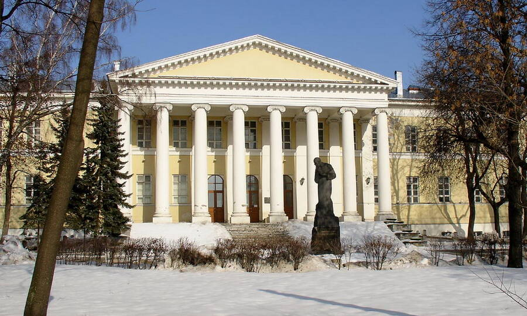
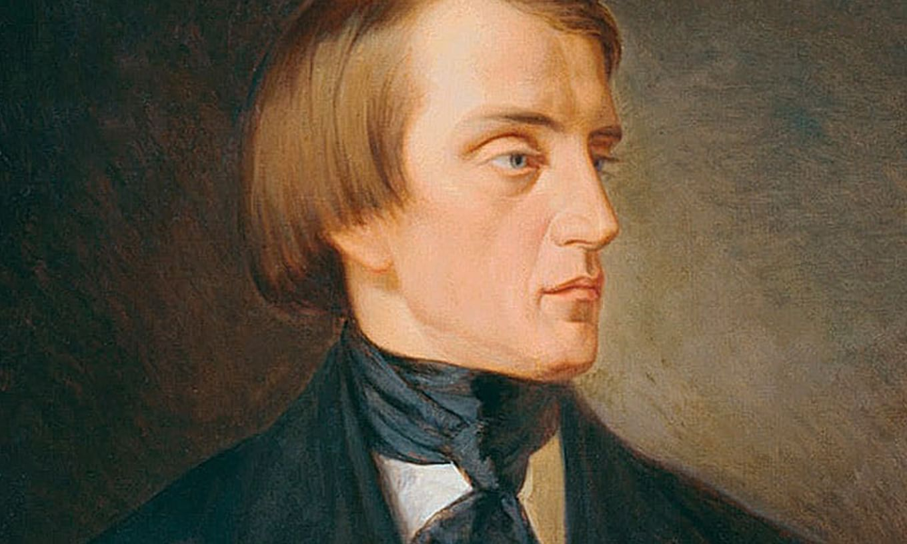
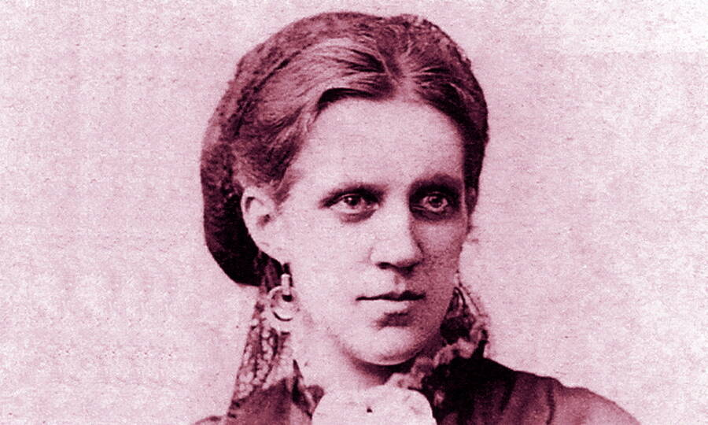

Достоевский
Фёдор Михайлович Достоевский – великий русский писатель-реалист,
классик мировой литературы, один из самых знаменитых и читаемых
русских авторов за рубежом. Достоевский оказал колоссальное влияние
на мировую культуру, а некоторые считают его родоначальником целого
философского течения XX века – экзистенциализма.
30 октября (11 ноября) 1821 года в московской Мариинской больнице для бедных у лекаря Михаила Андреевича Достоевского и его супруги Марии Фёдоровны родился сын Фёдор. Отец мальчика был человеком глубоко религиозным, учился в духовной семинарии, а затем поступил в московское отделение Императорской медико-хирургической академии и стал врачом. В 1812 году он помогал раненым, после победы над Наполеоном служил в военном госпитале, а после женитьбы перешёл на работу в Мариинскую больницу. В 1827 году Михаил Андреевич дослужился до чина коллежского асессора и получил потомственное дворянство.
Семеро детей в добропорядочной и благочестивой семье будущего романиста росли в атмосфере патриархальности, но полной любви и заботы. Вопреки тогдашним обычаям, детей никогда не били и вообще не наказывали жестоко, хотя отец их был человеком вспыльчивым и гневливым. С малых лет семья Достоевских прививала своим детям любовь к русской литературе и культуре. Няня рассказывала малышам чудесные сказки, мать учила грамоте по Священному Писанию, отец вечерами читал вслух произведения Пушкина, Державина, Карамзина.
Детство Фёдора Достоевского прошло в Москве, а также в усадьбе Даровое – небогатом имении под Каширой, которое семья смогла приобрести, вступив в дворянское сословие. До 13-летнего возраста Фёдор, как и его братья, учился дома. Приходящие педагоги занимались со старшими детьми русским и французским языками, литературой, математикой, а латыни их учил отец.
В 1834 году Фёдор и его старший брат Михаил поступили в пансион Леонтия Чермака – дорогое учебное заведение для детей дворян. Работали там блестящие педагоги, обстановка была строгой, но в то же время семейной: сам владелец пансиона много общался с воспитанниками, уделял внимание каждому, следил за их душевным и физическим состоянием. Огромное влияние на юного Фёдора Достоевского оказал учитель русского языка, замечательный педагог Н.И. Билевич. Благодаря ему Достоевский впервые начал задумываться о своём писательском призвании. Вообще, детство и юность Фёдора Достоевского прошли скорее в мире книг и вымысла, нежели в суровой действительности: он взахлёб читал стихи и романы, был полон мечтаний и возвышенных стремлений.
В 1837 году после тяжёлой болезни умерла мать Достоевского. Отца не стало два года спустя – он скончался в Даровом при не вполне ясных обстоятельствах, не то от апоплексического удара, не то от рук собственных крестьян. После смерти матери братья Михаил и Фёдор отправились в столицу, чтобы готовиться к поступлению в Инженерное училище. Год они занимались в приготовительном пансионе К.Ф. Костомарова. Фёдора в 1838 году в училище приняли, а Михаила – нет, и братьям пришлось расстаться. Сохранилась их живая переписка того времени, из которой ясно, что оба нисколько не вдохновлялись математикой и инженерными науками, а грезили исключительно литературой. Тем не менее, Фёдор в 1843 году окончил училище и даже поступил в столичную инженерную команду, однако вскоре бросил военную службу и решил целиком посвятить себя русской словесности.
Юношеские литературные опыты, о которых Фёдор Достоевский писал своему брату, не сохранились, однако ясно, что первые произведения Достоевский начал писать ещё во время учёбы в Инженерном училище. После выхода в отставку Достоевский занимался переводами, а в 1845 году завершил свой первый роман «Бедные люди», получивший успех у публики. Достоевский присоединился к кружку В.Г. Белинского, постепенно обрастая литературными знакомствами.
Впрочем, все соратники Белинского, да и сам знаменитый критик, не сумели оценить второе произведение начинающего писателя – повесть «Двойник». Достоевский рассорился и с Белинским, и с Некрасовым, и с Тургеневым и покинул общество редакции «Современника». С 1846 года он публиковался в «Отечественных записках» и продолжал расширять круг своих литературных связей – познакомился с И.А. Гончаровым, присоединился к литературно-философскому кружку Бекетовых и Майковых.
В середине 1840-х гг. молодой Достоевский увлекался не только литературой. В 1846 году он познакомился с М.В. Петрашевским, объединившим вокруг себя революционно настроенную молодёжь. В обществе петрашевцев распространялись опальные тексты и обсуждались идеи государственного переворота. В 1849 году деятельность кружка была раскрыта, его участники арестованы, в их числе и Фёдор Достоевский, признанный одним из опаснейших преступников. Как и другие петрашевцы, он провёл 8 месяцев в одиночной камере Петропавловской крепости, а затем выдержал процедуру смертной казни, которую отменили в последний момент.
22 декабря 1849 года петрашевцев собрали на Семёновском плацу и церемониально подготовили к расстрелу. После мучительного ожидания смерти их оповестили о помиловании и замене казни на каторгу. Император Николай I назначил Достоевскому наказание в виде четырёх лет каторжных работ. Годы сибирской ссылки писатель провёл в Омске, где, несмотря на запреты, тайно вёл дневник, известный впоследствии как «Сибирская тетрадь». Каторжный опыт писателя впоследствии лёг в основу «Записок из Мёртвого дома».
После четырёх лет в сибирском остроге Достоевский отправился на службу в Семипалатинск. Лишь после смерти императора Николая I писатель, как и другие петрашевцы, был помилован Александром II, но вернуться в Петербург смог только в 1859 году. В том же году в печати появились его произведения – повести «Дядюшкин сон» и «Село Степанчиково и его обитатели». Негласный полицейский надзор продолжался вплоть до 1875 года. Арест и годы, проведённые в ссылке, перевернули сознание Достоевского. Из Сибири Фёдор Михайлович вернулся глубоко верующим человеком, для которого до конца жизни будет важен поиск идеалов христианства и приближение к заветам Иисуса Христа.
Свою первую свою жену Марию Дмитриевну Исаеву Фёдор Михайлович встретил в 1854 году в Сибири. Они познакомились в Семипалатинске, где Достоевский служил после отбытия каторжного срока, и обвенчались в 1857 году. В союзе, который не стал счастливым, детей у Достоевского не было, однако он внимательно заботился о пасынке Павле, ребёнке Марии от первого брака. Мария Дмитриевна скончалась в 1864 году.
Второй супругой писателя стала Анна Григорьевна Сниткина, помогавшая ему стенографировать рукописи. С ней Достоевский обвенчался в 1867 году. Несмотря на 20-летний возраст, Анна Григорьевна прочно взяла в свои руки хозяйство и финансы мужа, помогла ему выбраться из долговой ямы, а после смерти Достоевского собирала документы, рукописи, письма знаменитого романиста, готовила их к публикации. От брака с Анной Григорьевной у Достоевского родились четверо детей, двое из которых умерли в раннем возрасте. До зрелых лет дожили дочь Любовь Фёдоровна, как и отец, посвятившая жизнь литературному творчеству, и сын Фёдор Фёдорович. Потомки последнего живут в Санкт-Петербурге.
Фёдор Михайлович Достоевский страдал от эпилепсии, первый приступ которой произошёл с ним, вероятно, ещё в подростковом возрасте, а медицинское подтверждение болезнь получила в годы заключения и каторги. Припадки падучей, как тогда называли эпилепсию, преследовали писателя на протяжении всей его жизни и даже нашли отражение в литературном творчестве – той же болезнью страдал главный герой романа «Идиот» князь Мышкин. Однако причиной смерти писателя стала не эпилепсия, а туберкулёз, осложнённый хроническим бронхитом и эмфиземой лёгких.
Ухудшение своего состояния Достоевский почувствовал накануне наступления 1881 года. В январе, как вспоминали его родные, после ссоры с сестрой из-за имущественных дел у писателя пошла горлом кровь, он слёг. Смерть Достоевского наступила пару дней спустя, 28 января (9 февраля) 1881 года. Похороны классика литературы собрали огромное количество народа, очередь из желающих проститься с ним растянулась на километр. Местом упокоения Достоевского стало Тихвинское кладбище Александро-Невской лавры в Санкт-Петербурге.